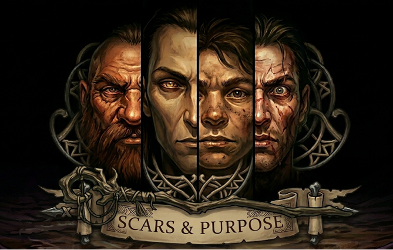

Scars & Purpose
Four peoples walk the unforgiving earth of this world. Your bloodline dictates the architecture of your bones — but the world measures you only by the scars you leave behind.
Of all the peoples who walk the surface world, none wear their history as visibly as the Dwarves. It is etched into their posture — a rigid solidity, shoulders squared against a burden unlifted for a millennium. It is carved into their faces, which do not soften with age like those of Men, but weather into harsh, geological topography.
They are forged for the deep: dense, corded with muscle born not of mere training but of ancestral labour within suffocating stone corridors where there is no room to swing, only to drive forward. Their skin bears the permanent kiss of the forge — ruddy copper, ashen grey, or the burnished obsidian of those who have stood too close to the fire. Their hair, when not singed away by heat, is bound in heavy iron rings or shorn entirely to make canvas for clan-runes.
They do not wither as shorter-lived peoples do. A Dwarf of a century remains in their prime. Yet as they pass their second century, a profound stillness settles behind their eyes. The young of other races mistake this for distance. In truth, it is the quiet, crushing gravity of having outlived the very things they built.
Their masterwork is Kel Thurum. Some call it a city, others a kingdom — in truth, it is a philosophy carved in stone. The mountain halls descend in tiers that consumed four generations to hollow, illuminated by geothermal veins harnessed before mankind had learned to name itself. Its civic tradition rests on a single, absolute premise: the city outlasts the individual, and the individual serves the city.
Every citizen of Kel Thurum is militia. Every miner has spilled blood. The distinction between soldier and craftsman is a surface-world luxury. A Dwarf of Kel Thurum is both, or they are nothing.
A festering wound lies beneath this pride. The Birn clan — once gifted deep-delvers of Kel Thurum — pressed into the dark when others declared a seam barren. Exposure to what the oldest texts name Titan-Blood warped them absolutely. Their exile was struck from the annals without ceremony. Today, the shaft they descended is not merely walled off; a permanent, silent militia watches the sealed stone, listening to the rhythmic, heavy scratching from the other side, ensuring the mountain's darkest mistake remains buried.
| Skill | Dwarf | Human | Elf | Halfling |
|---|---|---|---|---|
| Runecraft | 10 | 15 | 20 | 15 |
| Combat (Melee) | 25 | 30 | 30 | 35 |
| Hard as Nails | 25 | 30 | 35 | 35 |
| Faith | 25 | 25 | 30 | 25 |
| Fortitude | 25 | 30 | 35 | 35 |
| Evasion | 25 | 20 | 15 | 10 |
| Wizardry | 45 | 50 | 35 | 55 |
The Elves do not claim to be the firstborn of the world. Certainty is a luxury afforded only to the short-lived, who will perish long before they can be corrected. The Elves have walked the earth long enough to carry grief as a second tongue — fluent, unsurprised, and worn with the cold composure of a people who decided, centuries ago, to stop bleeding where others could see.
They are tall and spare, carved with a ruthless, angular economy. They move with the unhurried precision of those who have simply run out of reasons to rush. Their eyes bear colours that do not occur in the natural world — pale amber, necrotic violet, reflective silver — and possess a gaze defined not by distance, but by an abyssal depth.
By the time an Elf reaches their fifth century, they have watched their monuments lose their purpose, and everyone they loved become ash and legend. This weight does not break them. It calcifies them into something harder than grief.
The city of Thalasien is their masterwork and their burden. It is a settlement of cold, silver beauty — its architecture as calculated as Elven speech. Nothing placed carelessly. Nothing wasted. Every arch and spire carrying the weight of a decision made once and never revisited.
Their relationship with the arcane is not spiritual but clinical. They dissect the weave of magic as a mortician dissects a corpse, operating on the belief that absolute understanding is the only defence against absolute subjugation. This cold arithmetic has made them the world's foremost magical scholars — and among its most isolated peoples.
The Blight Elves are a wound in Thalasien's history it does not speak of openly. Cousins shaped by centuries in the Pale Weald's corrupted shadow, they bleed and breathe the arcane rot that Thalasien seeks to sterilize. When a Blight Elf walks through the silver gates of the capital, no alarm is sounded. The streets simply empty. They are permitted to walk the flawless corridors entirely alone — a living ghost of a compromised bloodline — until the crushing, engineered isolation drives them back into the rot where they belong.
| Skill | Elf | Human | Dwarf | Halfling |
|---|---|---|---|---|
| Wizardry | 35 | 50 | 45 | 55 |
| Evasion | 15 | 20 | 25 | 10 |
| Druidism | 30 | 35 | 35 | 30 |
| Combat (Ranged) | 25 | 30 | 30 | 30 |
| Stealth | 15 | 20 | 25 | 10 |
| Runecraft | 20 | 15 | 10 | 15 |
| Hard as Nails | 35 | 30 | 25 | 35 |
The Halflings are the most consistently underestimated people in the known world — a deception they have spent millennia meticulously cultivating. Barely four feet at their apex, they bear the wide, open faces of a people who learned early that perceived harmlessness is an impenetrable armour.
Their feet are broad and heavily calloused, preferring bare earth — soles thick as cured hide, yet sensitive enough to read the ground's tremors as a scholar reads text. Their hands are blunt and dexterous, carrying the inherited knowledge of fingers that know the exact threshold between living soil and dead rot.
Do not mistake their warmth for fragility. They are the first to laugh and the last to break, and the space between those two states is a lethal trap. They are patient in the manner of the deep earth: absolute, silent, and possessing a long, unforgiving memory.
To the Humans, they are a pastoral curiosity. To the Elves, an anomaly. To the Dwarves, a footnote. The Halflings encourage this dismissal. They have spent millennia cultivating a reputation for jovial harmlessness, understanding early on that in a world governed by iron and malefic arcane weaves, the most impenetrable armour is simply not being perceived as a threat.
This deception is anchored in their homeland, the Warrens of Oakhaven. On the surface, it is a region of rolling, unremarkable hills and dense, quiet woods. Beneath the soil, it is an intricate, heavily fortified network of subterranean routes, false dead-ends, and earthen architecture designed to collapse on intruders. It is a survival bunker wearing the mask of a meadow.
Their legendary Earth Bond is not a gentle communion with nature, but a biological anchor to a traumatised planet. The soil of this world is saturated with the spilled, volatile essence of the Architects. When a Halfling walks barefoot, they do not just read the weather — they feel the tectonic grinding of the world's deepest scars. Their elders maintain a profound, unsettling silence regarding the history before the other races arrived. They do not share this history, because they know that in a post-cataclysmic world, some memories act as a beacon, and some truths are safer left buried in the dark.
| Skill | Halfling | Human | Dwarf | Elf |
|---|---|---|---|---|
| Evasion | 10 | 20 | 25 | 15 |
| Stealth | 10 | 20 | 25 | 15 |
| Thieving | 10 | 20 | 30 | 20 |
| Druidism | 30 | 35 | 35 | 30 |
| Perception | 15 | 20 | 20 | 15 |
| Hard as Nails | 35 | 30 | 25 | 35 |
| Combat (Melee) | 35 | 30 | 25 | 30 |
Humans are the most populous race in the known world, and from this sheer volume they have forged a sprawling, contradictory mass of civilisations — each fanatically convinced it represents the apex of culture. They are physically volatile: compact or towering, pale or dark, shaped by ten thousand years of restless, violent migration across every forgiving and unforgiving terrain.
They live barely a century. They build as though they will live forever. This fleeting mortality is their most dangerous weapon. A Dwarf builds for the mountain. An Elf builds for posterity. A Human builds to outrun the grave. This panic breeds the world's greatest architects and its most reliable source of catastrophic overreach.
Individually, a Human is fragile beside an Elf's precision or a Dwarf's endurance. Collectively, they are a sprawling, unpredictable equation that the rest of the world has been failing to solve for millennia.
Human kingdoms are vast and fractious, bound by trade routes that double as battlelines. They are unified primarily by the Church of the Radiant Compact — a faith whose dogma travels faster than any army, and whose institutional relationship with the truth is deliberately unrecorded.
The Church maintains its terrifying, consuming authority through an order of silent inquisitors. Their sole purpose is not to execute heretics, but to excise the margins of older histories. Massacres, broken pacts, and cataclysms are meticulously removed from the vaults, leaving a pristine, fabricated timeline of human righteousness. The elder races find this relentless erasure exhausting, but none have managed to halt it.
The city of Havenspire is their closest analogue to a capital — a trading hub of contradictions, where every ideology finds a quarter and every quarter eventually catches fire. It is perhaps the most accurate possible representation of what Humans are at their core: brilliant, chaotic, and perpetually on the verge of burning down what they just finished building.
| Skill | Human | Dwarf | Elf | Halfling |
|---|---|---|---|---|
| Combat (Melee) | 30 | 25 | 30 | 35 |
| Faith | 25 | 25 | 30 | 25 |
| Wizardry | 50 | 45 | 35 | 55 |
| Runecraft | 15 | 10 | 20 | 15 |
| Shaman | 30 | 35 | 35 | 35 |
| Evasion | 20 | 25 | 15 | 10 |
| Stealth | 20 | 25 | 15 | 10 |